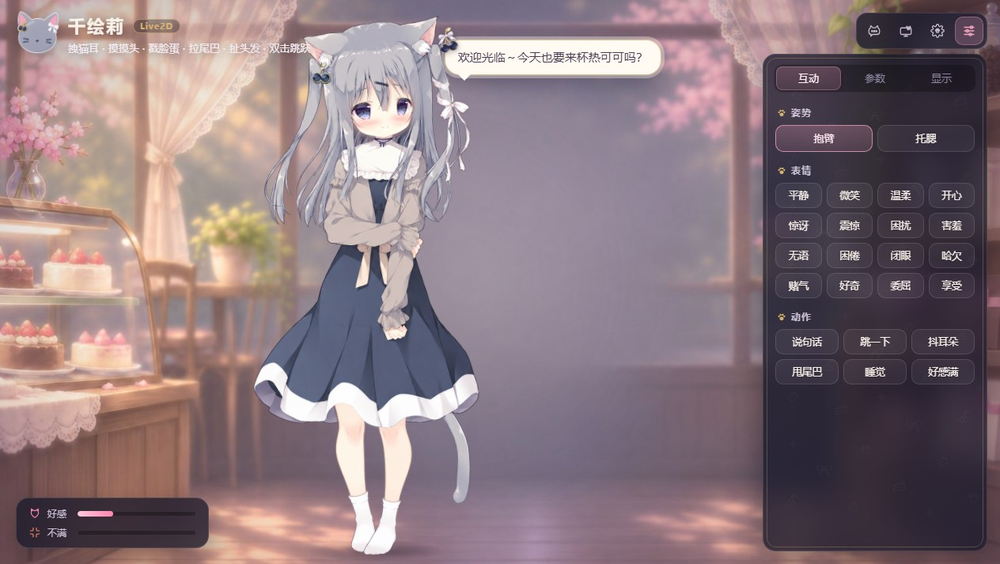

No.01
雪村千绘莉Live2D 风格互动桌面宠物
lizitc / chieri-live2d
只用两张平面立绘和一套表情差分，做成可以实时互动的角色。加载时在浏览器里把立绘切成图层、铺上网格，用手写的形变器实时变形，WebGL2 画出来。没有 Cubism，没有 .moc3，也没有任何运行时依赖。
- 拽耳朵会生气，摸头会脸红，戳脸会凹下去
- 头发、裙摆、尾巴都有弹簧物理，尾巴节奏跟着心情变
- 接上大模型后，表情、动作和台词都由 AI 决定
- Electron 桌宠外壳，内置 GPT-SoVITS 专属声线